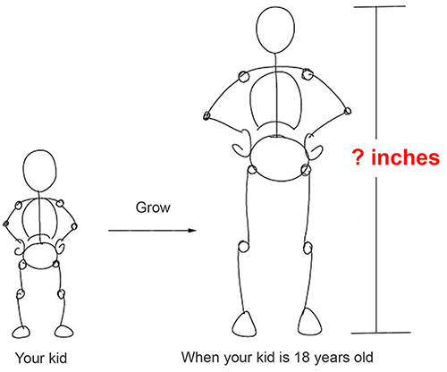
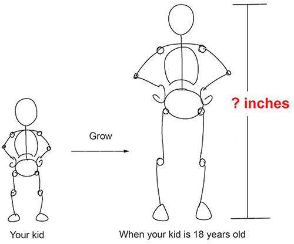
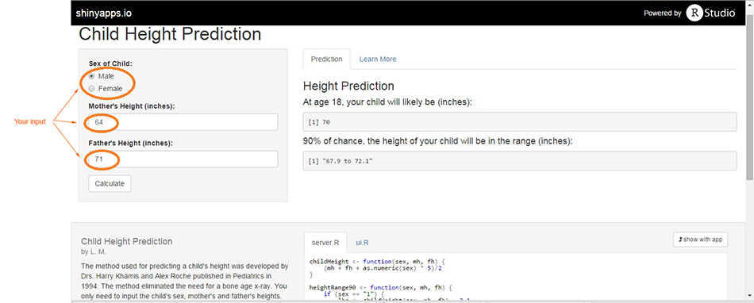

What's this Application for?
- This Application is for predicting a child's height at age 18.

L. M.

Simple
- No need for Growth Chart, Bone X rays, ......
- Only three parameters needed: Sex of Child, Mother's Height, and Father's Height
Accurate
- >= 90 percent chance that the real height will be within 2.1 inches of the prediction

Reference
Predicting Adult Stature Without Using Skeletal Age: The Khamis-Roche Method by H.J. Khamis and A.F. Roche, Pediatrics, October 1994
# Function of height
# Mother's height - mh; Father's height - fh; Sex of child - sex (sex = 1 for boys, sex = -1 for girl)
childHeight <- function(sex, mh, fh) {(mh + fh + as.numeric(sex) * 5)/2}
# Example: A boy's height prediction
# mh = 64 inches; fh = 74 inches; sex = 1
print(h <- childHeight(1, 64, 74))
## [1] 71.5
Your child's height will likely be 71.5 inches at age 18!